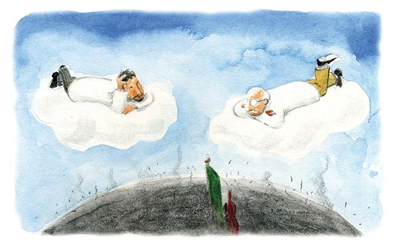

¿Qué es la explosión demográfica?
La explosión demográfica es el término que designa el verteginoso crecimiento de la población
mundial en los ultimos años. Ante la preocupación de que el crecimiento de la población sea mayor
a la capacidad de la tierra para producir alimentos, algunos países han adoptado políticas de
control de natalidad.Se denomina crecimiento poblacional o crecimiento demográfico al cambio en el
número de pobladores de una región geográfica determinada en un cierto plazo.
Tipos de crecimiento poblacional
En principio existen dos tipos de crecimiento poblacional, uno positivo y uno negativo. Se habla de
crecimiento positivo cuando la población de la región analizada ha aumentado durante el período observado,
es decir, hay más pobladores. Y, lógicamente, el crecimiento será negativo cuando la población haya perdido
pobladores, es decir, se haya achicado.
Este libro es adecuado para cualquiera que tenga interés en aprender a desarrollar sus propias
páginas web. No son necesarios conocimientos previos para aprender con este libro, lo único que
es necesario es saber utilizar un ordenador y saber navegar por la Web.
Causas del crecimiento poblacional
Las causas del crecimiento poblacional pueden ser diversas, tales como:
- Fecundidad y condiciones de salud. Cuando una población alcanza condiciones de salubridad óptimas,
que le permite vivir más allá de la edad reproductiva y ampliar las familias, generalmente las tasas de natalidad
aumentan, la población se muestra fecunda y se reproduce cuantiosamente. En cambio, cuando las condiciones son hostiles,
los individuos prefieren no reproducirse o hacerlo poco, o simplemente no reúnen las condiciones mínimas para superar la edad
reproductiva. Otro elemento importante es la tasa de muerte infantil, que deberá ser baja para permitir a los nuevos individuos
crecer, formarse y eventualmente reproducirse también.
- Aumento de la longevidad. Si las personas viven más tiempo, podrán reproducirse más y además vivirán para ver a
sus descendientes alcanzar la edad adulta, generando así una población anciana.
- Migraciones. Las llegadas y salidas de individuos que deciden hacer su vida en otros lados (emigrantes) o que
vienen de otras regiones a la estudiada (inmigrantes), no solo contribuye al enriquecimiento cultural y genético, sino que además
puede añadir nuevos pobladores o sustraer individuos que se marcharon.
Cambios en la calidad de vida en general. Una economía pujante, una política estable, una gran demanda de trabajadores
o un gran mercado de consumo de servicios suelen ser factores que generan inmigración y un crecimiento poblacional positivo, ya que
los pobladores poseen un nivel de vida que les garantiza un futuro.
Población histórica
AÑO |
POBLACIÓN |
+% |
1865 |
8 259 080 |
— |
1910 |
15 160 369 |
+83.6% |
1921 |
14 334 780 |
−5.4% |
1930 |
16 552 722 |
+15.5% |
1950 |
25 791 017 |
+31.2% |
1960 |
34 923 129 |
+35.4% |
1970 |
48 225 238 |
+38.1% |
1980 |
66 846 833 |
+38.6% |
2000 |
97 483 412 |
+20.0% |
2010 |
113 580 528 |
+16.5% |
2018 |
123 982 528 |
+9.2% |